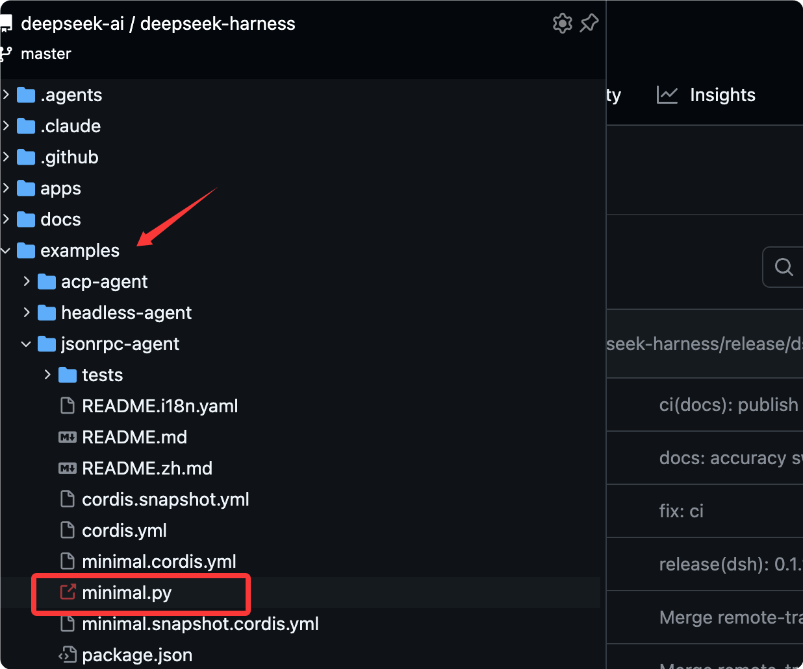
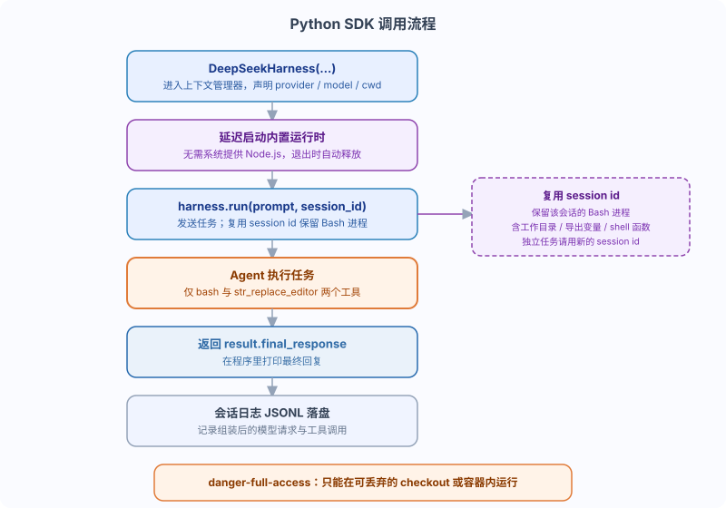

DeepSeek Harness Python SDK call
The Web UI is for humans to look at, but if you need to call it from a programdshAt that point, what is needed is the SDK.
This chapter covers the Python SDK: how to install it, how to run the built-in examples in the repository, and how to call it in your own programs.
What problem does the Python SDK solve?
The SDK turns dsh into a single line call inside your program, rather than a page in a browser.
DeepSeekHarnessIt is the core class of the Python SDK, using a context manager to manage the runtime lifecycle.
Entering the with block lazily starts the built-in runtime; exiting releases it automatically, and run can be called repeatedly in between.
Suitable scenarios: batch processing tasks, integrating dsh into your own product, and driving Agents in tests.
Once the SDK is installed, the runtime does not require the system to provide Node.js—the Python process carries its own copy.
Prerequisites
The SDK has explicit system requirements—check them first.
| Dependency | Requirement |
|---|---|
| Python | 3.10 or higher |
| Git | Installed |
| Operating system | Linux x64, Linux arm64, or macOS 14+ arm64 |
| API endpoint | DeepSeek-compatible API endpoint and credentials |
| Workspace | Isolated workspace that the agent can modify |
Install SDK
Clone the repository to get runnable examples, create a virtual environment, then install the SDK and the built-in runtime of the same version.
$ git clone https://github.com/deepseek-ai/deepseek-harness.git $ cd deepseek-harness $ python -m venv .venv $ . .venv/bin/activate $ python -m pip install deepseek-harness-sdk
A virtual environment isolates the SDK from other Python packages on the system—the officially recommended approach.
After installation, the runtime does not require the system to provide Node.js.
Run built-in examples from the repository
The repository includes a minimal.py example; getting it to run is equivalent to verifying the entire SDK pipeline.

First set credentials in the environment.
$ export DEEPSEEK_API_KEY=sk-your-key-here # export DEEPSEEK_BASE_URL=http://127.0.0.1:8000/v1 # export DSH_MODEL=deepseek-v4-flash # export DSH_SYSTEM_PROMPT='You are a helpful software engineer assistant.'
If the model is not provided by the default DeepSeek endpoint but through an OpenAI-compatible proxy, you also need to set DEEPSEEK_BASE_URL.
Then run a task against an isolated workspace and session directory.
$ python examples/jsonrpc-agent/minimal.py \ --workspace /absolute/path/to/workspace \ --session-root /absolute/path/to/sessions \ --session-id example-001 \ "Inspect the repository and fix the failing tests."
The script will print the assistant's final reply.
The session directory receives JSONL logs that include the assembled model requests and tool calls.
Using the SDK in your own program
The built-in example in the repository is actually a lightweight wrapper around the SDK call below; the core is just two steps.
Example
from pathlib import Path
from deepseek_harness import DeepSeekHarness
# Absolute path of the example combined configuration file (.cordis.yml describes which plugins to start)
config = Path("examples/jsonrpc-agent/minimal.cordis.yml").resolve()
# The workspace accessible to the agent must be an absolute path.
workspace = Path("/absolute/path/to/workspace").resolve()
Directory for saving session logs and state, must be an absolute path
sessions = Path("/absolute/path/to/sessions").resolve()
# Context manager: lazily start the built-in runtime on entry, and automatically release it on exit.
with DeepSeekHarness(
provider="deepseek-official", # Use the official DeepSeek provider
model="deepseek-v4-flash", # Model name, also the SDK default
max_tokens=49_152, # Maximum number of tokens per single reply
cwd=str(workspace), # Set workspace as the agent's working directory
session_root=str(sessions), # Where to write session logs
cordis=str(config), # Which bundle configuration to start with
) as harness:
# Send a task; session_id is used to identify this persistent conversation
result = harness.run(
"Inspect the example-demo repository and fix the failing tests.",
session_id="example-001",
)
# Print the assistant's final reply
print(result.final_response)
DeepSeekHarness lazily starts the built-in runtime and keeps reusing it until the context manager is exited.
The same harness can call run multiple times inside the with block, and the runtime starts only once.
Reuse session ID: preserve Bash processes
This is the most easily overlooked and most useful rule of the SDK.
Reusing the same harness and session id preserves the Bash processes owned by that session.
Including its working directory, exported variables, and shell functions—all carry over to the next call.
Example
result = harness.run(
"Run `cd /repo && export EXAMPLE_MODE=dev` and confirm.",
session_id="example-session",
)
print(result.final_response)
# Second call: reuse the same session id, the exported variable is still there
result = harness.run(
"Print the value of EXAMPLE_MODE.",
session_id="example-session",
)
print(result.final_response)
Independent tasks should use a new session id; only reuse the original id when the next call needs to continue the same persistent conversation.
Overview of example combinations
The combination behind minimal.py is a deliberately minimal configuration; let's go through each item to see what it does.
| Property | Value |
|---|---|
| System prompt | DSH_SYSTEM_PROMPT；未SettingswhenUsage You are a helpful software engineer assistant. |
| Model used by minimal.py | --model, then DSH_MODEL, and finally deepseek-v4-flash |
| Model-oriented tools | Only persistent bash and str_replace_editor |
| Bash timeout | 300 seconds |
| Editor output limit | 16,000 characters |
| Context compression | Closed |
| file system | Bare local backend; the editor uses absolute paths and can access any path visible to the runtime process. |
| Conversation persistence | Uncompressed JSONL under DSH_SESSION_ROOT |
This combination omits plugins such as harness identity, workspace prompt text, skills, one-shot Bash, task tools, and context compression.
The overall calling flow is as follows.

Boundary of danger-full-access
This example combination uses the danger-full-access permission preset, and you must be clear about its boundaries.
danger-full-access can only run in a disposable checkout or container.
Bash and the editor can modify any path accessible to the runtime process; there is no sandbox as a safety net.
The persistent PTY backend requires a POSIX terminal environment, so this combination does not support Windows agents.
In other words, before using it to run real projects, first confirm that you won't mind if this environment gets broken.
Summary self-test
One-sentence summary: the Python SDK wraps the runtime with the DeepSeekHarness context manager and sends tasks via run(prompt, session_id).
Test your understanding with three quick questions.
- What is preserved when reusing the same session id?
- In what situations should you use a new session id?
- What tools does minimal.py enable for the model by default?
Reference answer: the Bash process for that session is preserved, including the working directory, exported variables, and shell functions.
Use a new id for independent tasks; only reuse it when you need to continue the same persistent conversation.
Only persist the two tools: bash and str_replace_editor
other extensions